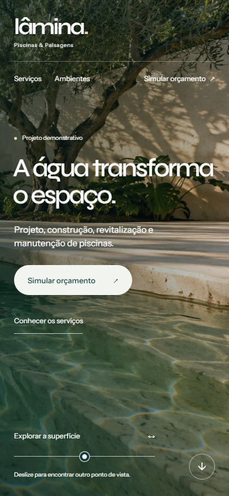
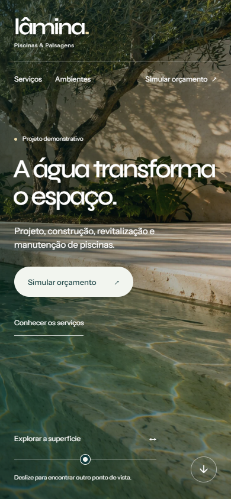
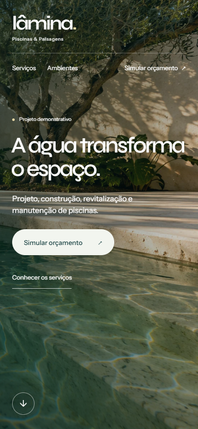

Projeto demonstrativo · revisão de 9 de novembro de 2026
Lâmina.
A Superfície, em movimento.
Evidências reais do protótipo no Chromium 158.0.8127.18. As imagens da piscina são cenas originais geradas por IA; as capturas e gravações abaixo registram o navegador executando o protótipo.
Experimente no navegador
Na pasta do projeto, execute npm.cmd run dev e abra http://127.0.0.1:4321. Mova o controle “Explorar a superfície”, role até os serviços e volte. A simulação fica no final da página.
Três composições
 1440px · quadro inicial
1440px · quadro inicial 820px · quadro inicial
820px · quadro inicial
390px · quadro inicialPercursos reais
Capturados em navegador headless completo com aceleração gráfica. A gravação mostra a execução real, mas sua taxa de quadros não é uma medição do FPS do site. Mobile e tablet são viewports emulados.
As três calibrações
Escolhida: moderada. A discreta preserva quase integralmente a fotografia; a expressiva altera demais as linhas da pedra. Os controles são os mesmos nas três páginas.
Ver as três gravações de calibração
Passagem entre seções
1440px · cinco estados da transição
820px · cinco estados da transição
390px · cinco estados da transição
Serviços, ambientes e simulação
Alternativas visuais

Sem WebGL · fotografia e exploração preservadas Movimento reduzido · composição estática
Movimento reduzido · composição estática
Sem JavaScript · conteúdo disponívelTodos os tamanhos e páginas inteiras
A captura da página inteira registra apenas uma posição do fundo sticky; use a sequência de estados ou os vídeos para avaliar a passagem real.
Limites da evidência
Não foram usados aparelhos Android/iOS físicos. WebKit de teste em Windows não equivale a Safari em iPhone. A medição de fluidez usa intervalos de requestAnimationFrame e custo JavaScript; não mede diretamente o tempo de apresentação da GPU. Não houve teste com participantes externos.